What physics does a solar system need?
This project starts from a cold gas cloud and ends with terrestrial planets, using our own N-body, SPH and disk codes. Every ingredient was added because the simpler model failed in a specific way. This page is that ledger, and the test of which entries the final systems actually depend on.
The story in pictures
The same simulations, rendered for looks rather than measurement. Positions, masses, temperatures and gaps come from the runs; brightness stretches, textures and planet sizes are artistic, and anything added for the picture is said in its caption.

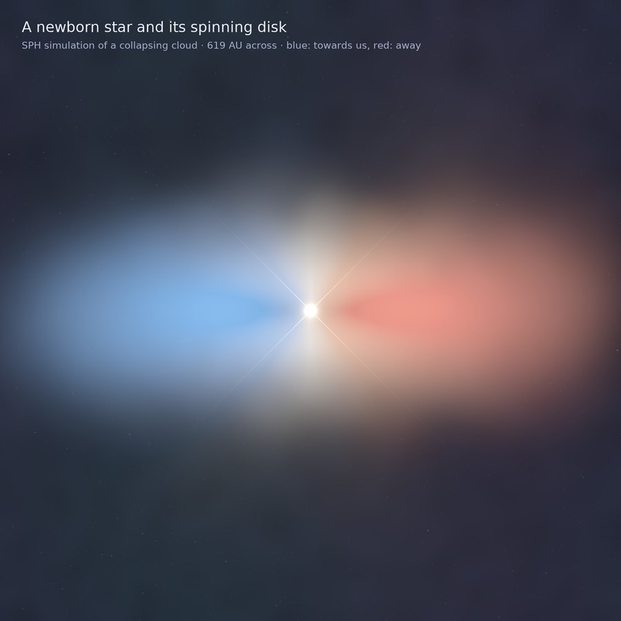

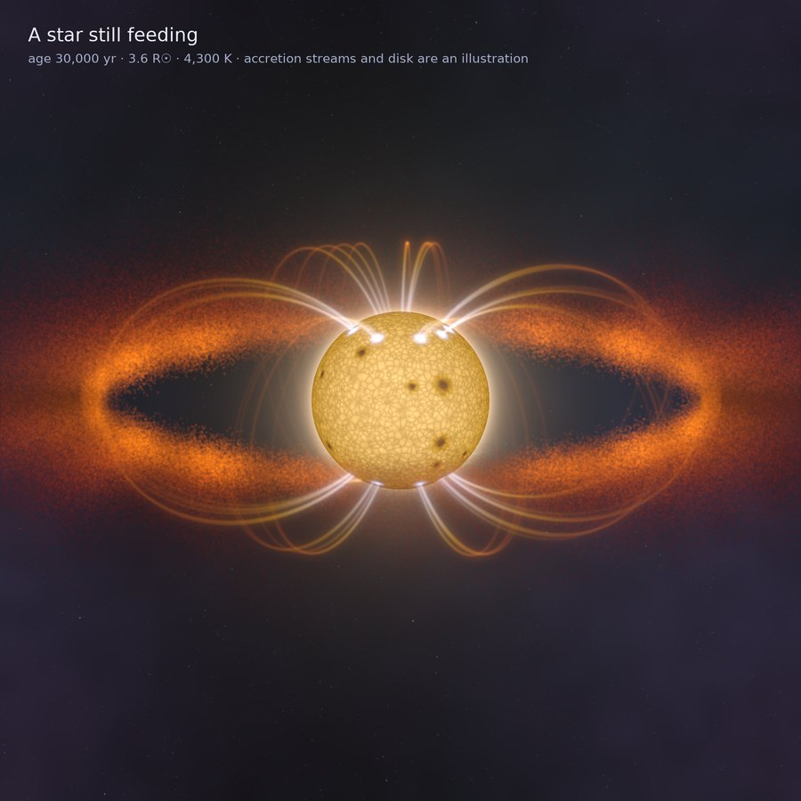

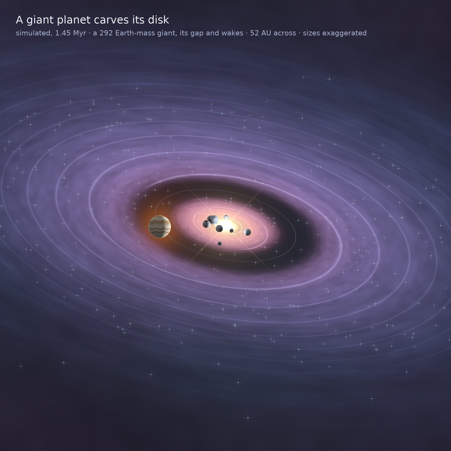

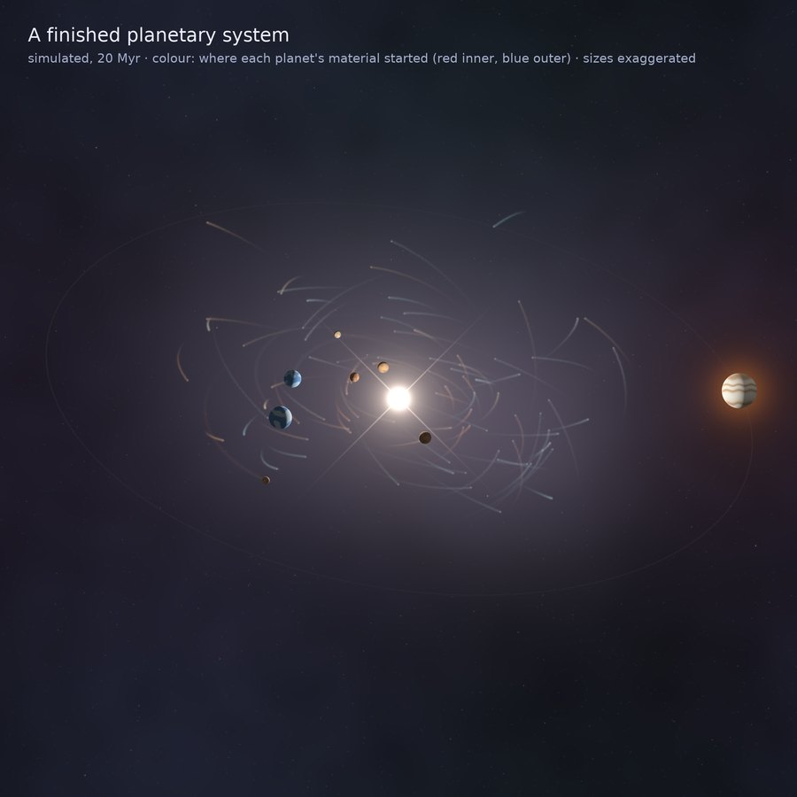
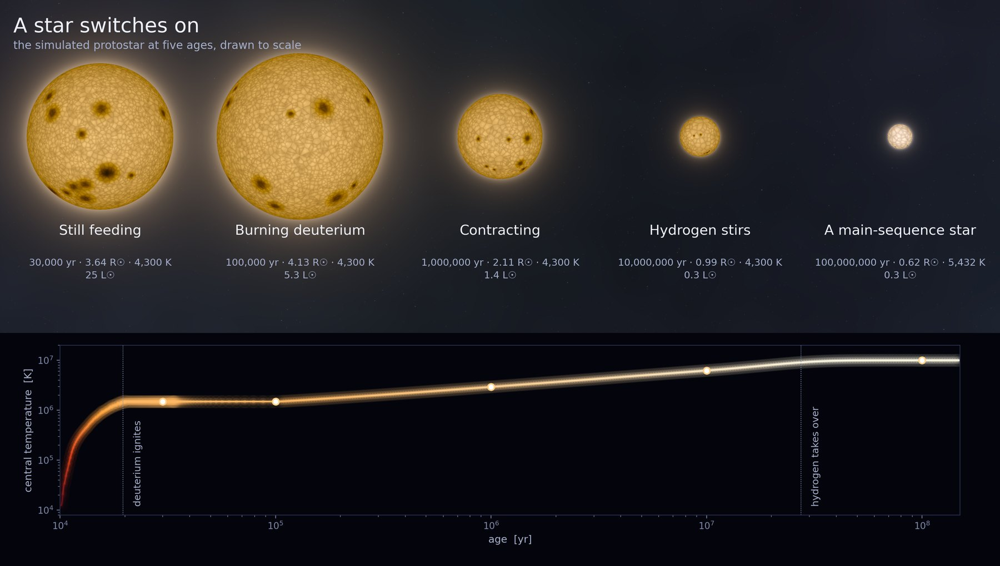
The same stages, as science plots
The ledger
Each card is one ingredient and the failure that forced it in. Highlighted cards are from the final arc. Together they are the answer to the project's question as it stands.
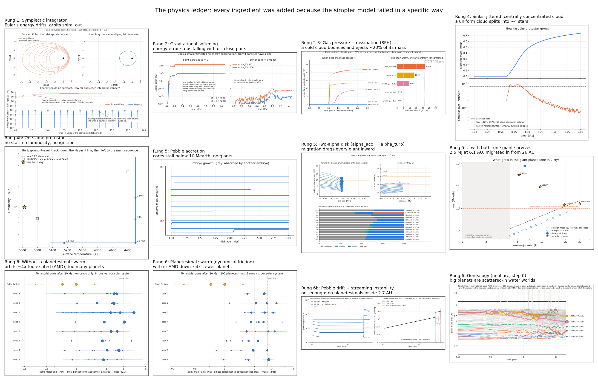

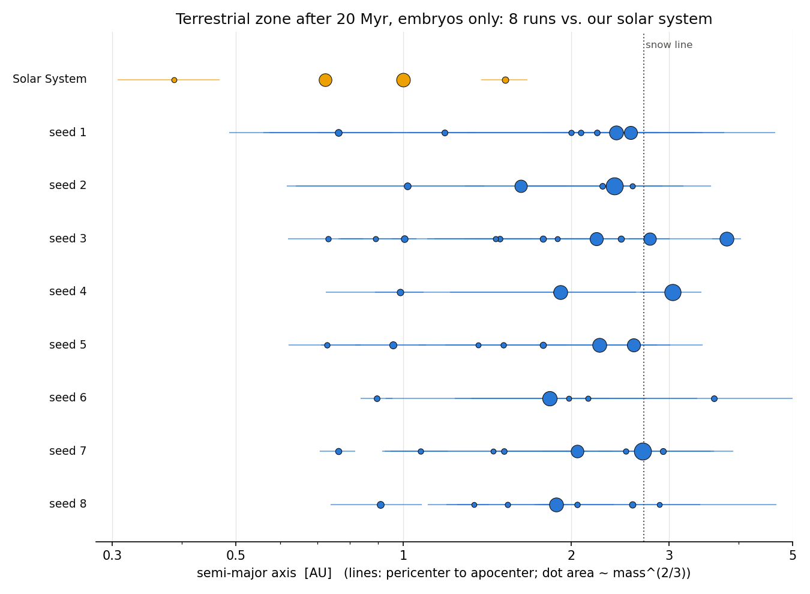

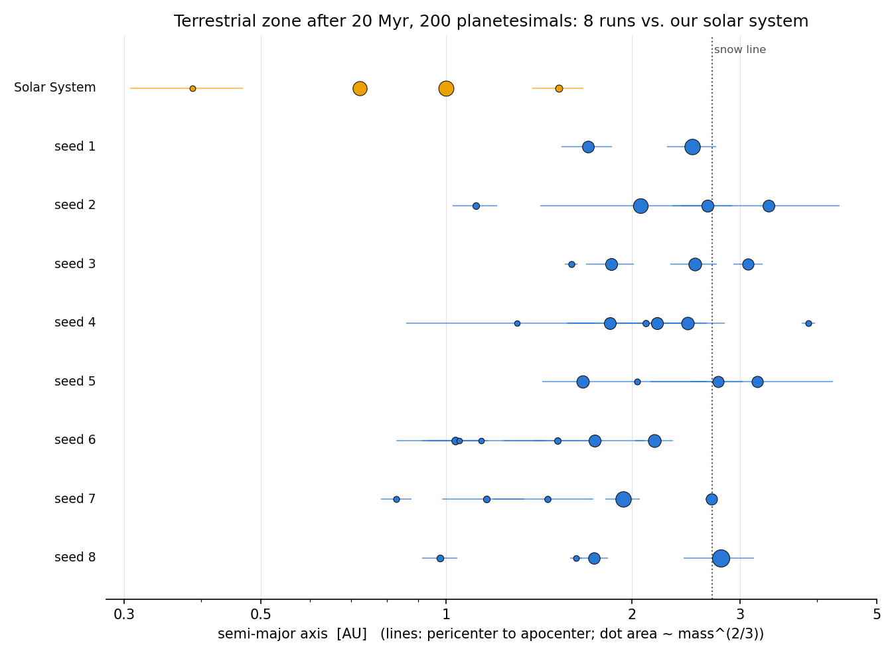
Final arc
Where the planets came from
step 0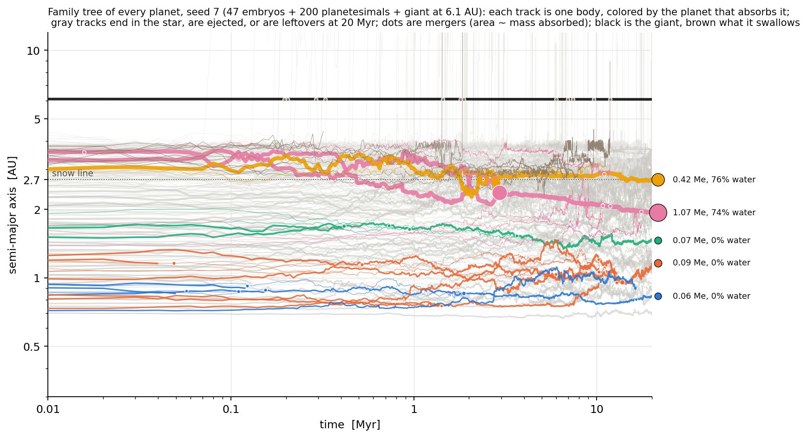
An accretion-heated disk
step 1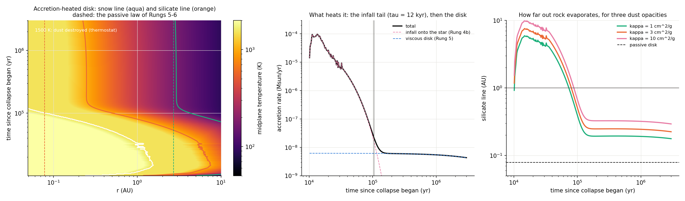
Collisions that don't just merge
step 4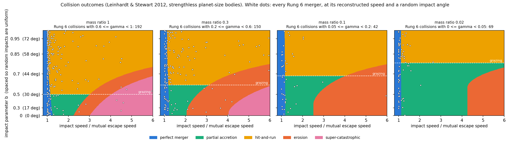
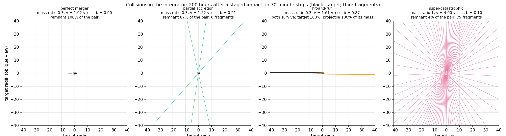
The real Solar System, with general relativity
step 6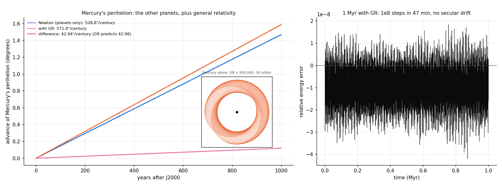
The open problem
No ingredient so far puts enough mass inside 1.5 AU. Every run's largest planets sit at 1.7–2.8 AU, where the Solar System has Mars and the asteroid belt. The hot disk was the physics attempt. A mass-matched control, with the inner disk rescaled to hold the Solar System's mass, is running now. It asks whether the disk is the only thing wrong, or whether the dynamics are too.
Still running
- step 5The physics ladder and the removal test. New runs with the mass-matched disk and with fragmentation, then the full model with one ingredient removed at a time. The result is a necessity matrix: which ingredient each scorecard row depends on.
- step 7The Lyapunov time. How long the Solar System stays predictable (about 5 Myr, Laskar 1989), measured with our integrator.
- step 8Our planets' long-term fate. The simulated systems run to 100–200 Myr: are they stable, and how chaotic are they?